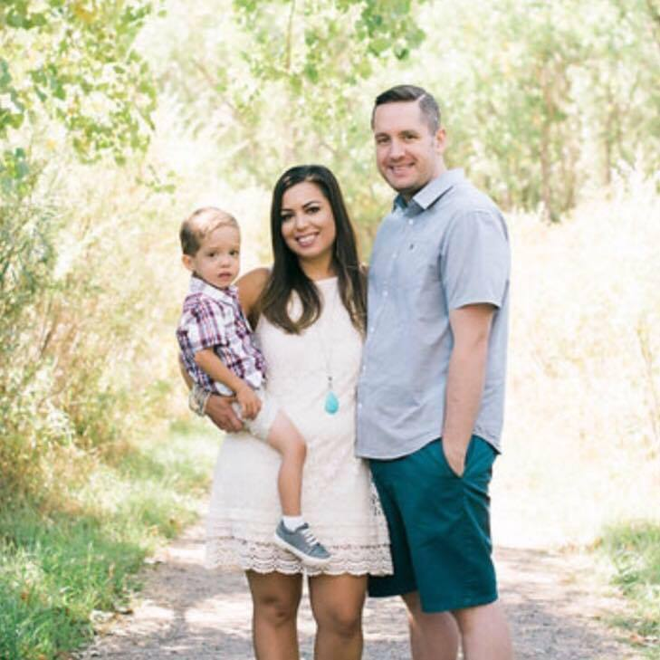

Hello ! Thanks for reading
my bio. I was born and raised in a
lovely city called Santa Barbara. At the age
of 18 I joined the United States Air Force and worked in health services management (a fancy name for
medical admin). In San Antonio,
TX I worked in the Emergency Room of a Level I Trauma hospital and realized I wanted to be in the action
as
a nurse. I worked full time and went to school full time and finally graduated with my BSN in 2016. I am
very proud of being a nurse and I hope to take my skills to the next level and write medical software
since
I am familiar with the user's needs. I love to challenge myself and I am doing so
in DU's Coding Bootcamp.
On my off time I enjoy snowboarding,
yoga,
hiking (all things active),
traveling and seeing obscure bands at small venues. I am very excited to see where this Boot Camp takes
me!